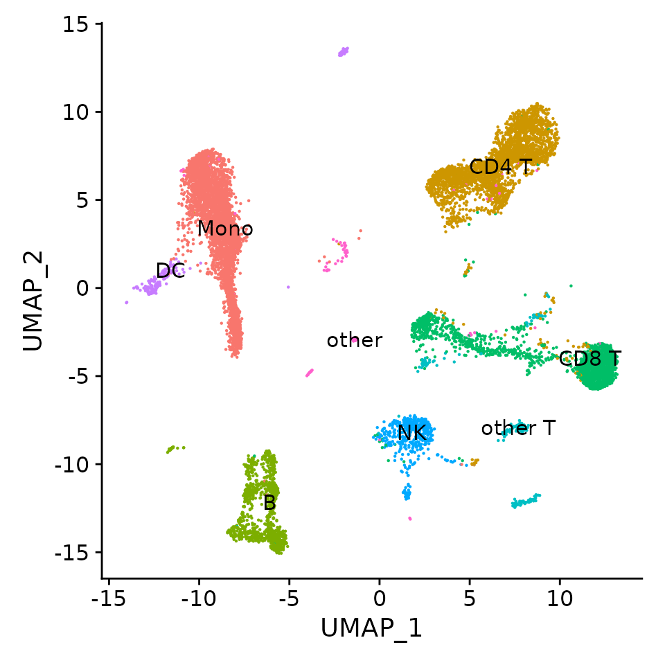
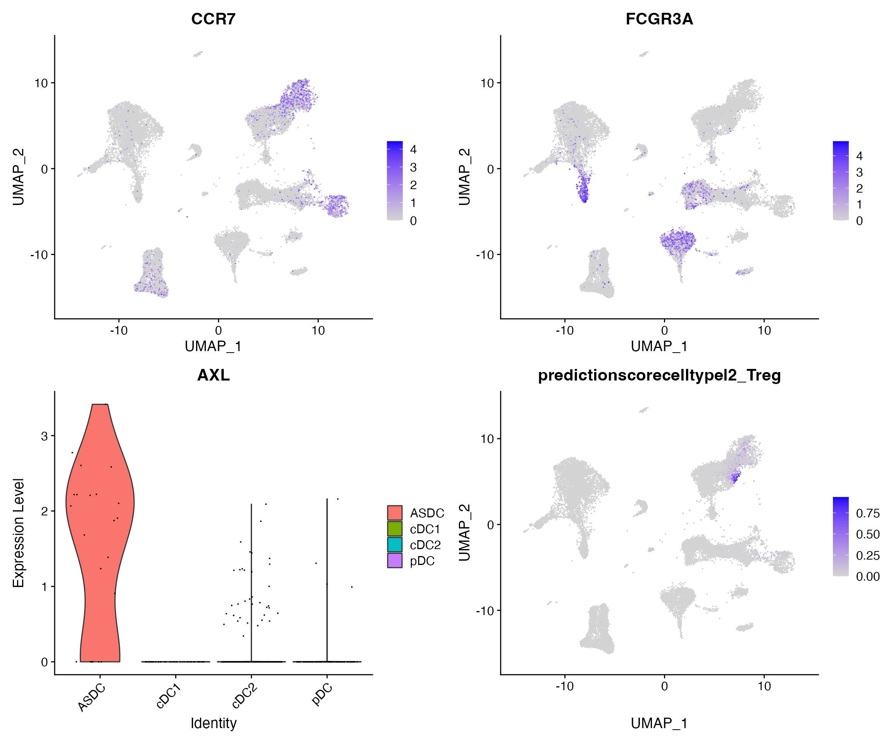
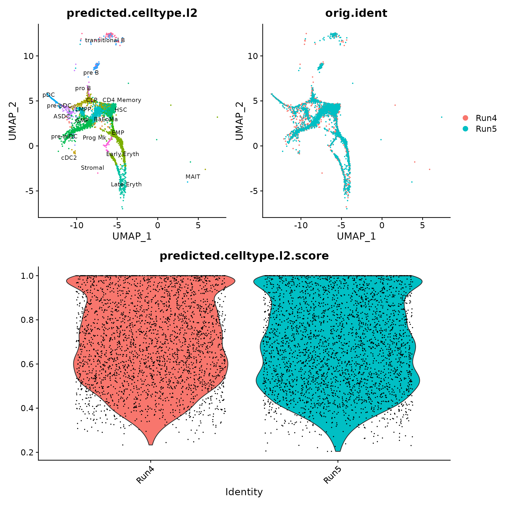
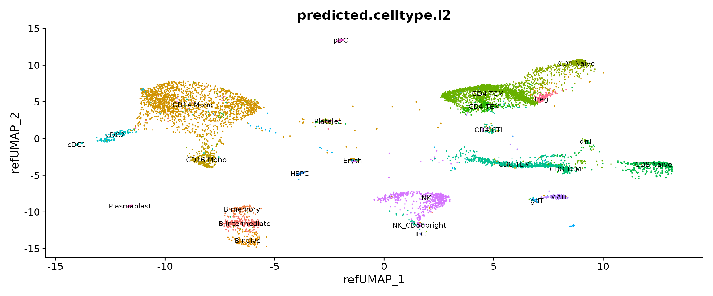
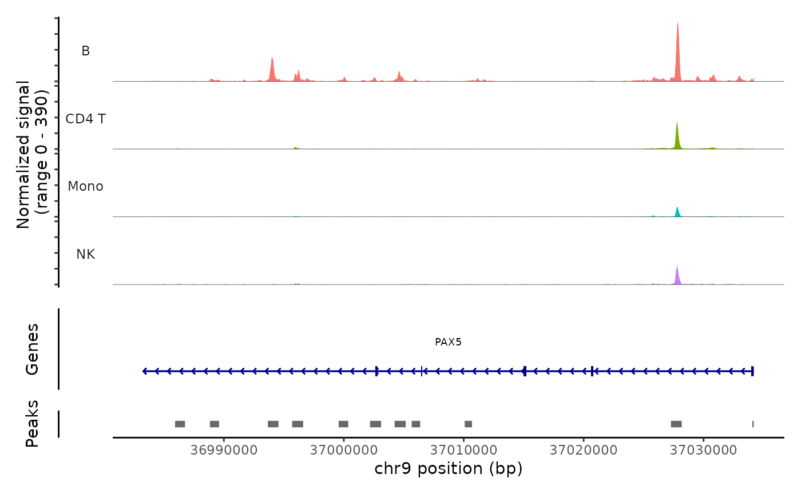
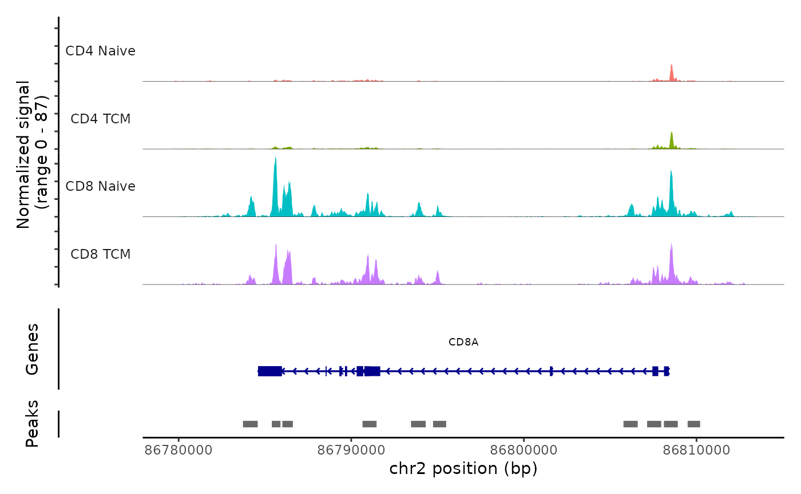
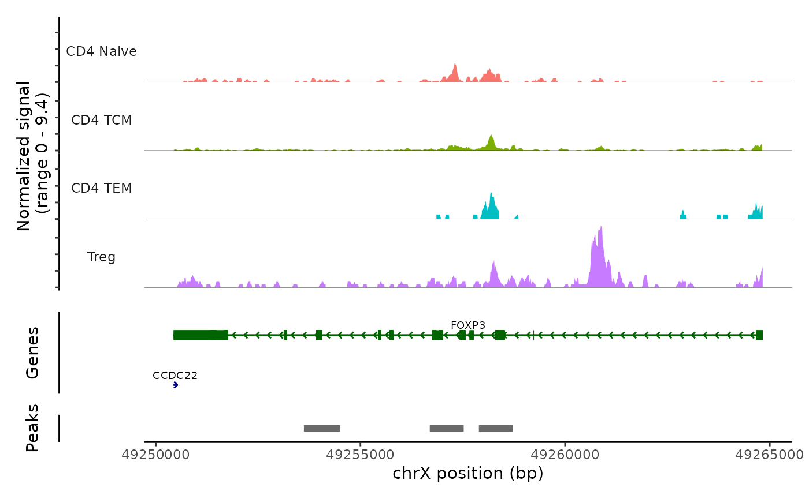

Azimuth annotation
Compiled: March 26, 2023
Source:vignettes/run_azimuth_tutorial.Rmd
run_azimuth_tutorial.RmdOverview
This vignette demonstrates how to map scRNA-seq and scATAC-seq data to Azimuth reference datasets directly in R, without the need to upload data into the web application.
Reference-based mapping provides an attractive alternative to unsupervised analysis. When well-curated and annotated references are available, reference-mapping can rapdidly, robustly, and sensitively annotate and interpret query datasets. As part of the Human Biomolecular Atlas Project, we have built integrated references for multiple human tissues, available at azimuth.hubmapconsortium.org. Azimuth is a web-tool that maps user-uploaded datasets - starting from an unnormalized expression counts matrix.
In this vignette, we demonstrate the use of a function RunAzimuth() which facilitates annotation of single cell datasets.
As with the web application, Azimuth is compatible with a wide range of inputs, including Seurat objects, 10x HDF5 files, and Scanpy/h5ad files. Once Azimuth is run, a Seurat object is returned which contains
- Cell annotations (at multiple levels of resolution)
- Prediction scores (i.e. confidence scores) for each annotation
- Projection onto the reference-derived 2-dimensional UMAP visualization
For scRNA-seq mapping, reference datasets are automatically downloaded as part of out previously released SeuratData framework. Datasets can then be passed through Azimuth using a single command.
Azimuth ATAC
We recently released Azimuth ATAC, which uses the bridge integration methodology introduced in Hao, et al 2022. and demonstrated in this vignette. A multimodal bridge dataset, measuring both scRNA-seq and scATAC-seq data per cell, is used to transfer annotations from our high quality RNA references to an ATAC query. The Azimuth ATAC web application increases app efficiency by using a fast requantification method based on overlap to match the peaks in your query ATAC data to that of the multiome. Thus, users only need to upload the peak-cell matrix from their data. Alternatively, if users would like to requantify peaks from the information stored in their fragment file, the RunAzimuth() function in R will run standard bridge integration using both the peak-cell matrix and the fragment file. For Azimuth ATAC, you can download the reference dataset here.
Installation
We first install and load Seurat, Azimuth, and Seurat-Data. Note, that Azimuth ATAC requires Seurat v5, but Azimuth for scRNA-seq queries can work with Seurat v4 or v5.
devtools::install_github("satijalab/seurat", "seurat5")
devtools::install_github("satijalab/seurat-data", "seurat5")
devtools::install_github("satijalab/azimuth", "seurat5")scRNA-seq queries
View data download code
To download all the required files, you can run the following lines in a shell:
Map PBMC scRNA-seq datasets from 7 different technologies
We first consider a benchmark dataset from Systematic comparison of single-cell and single-nucleus RNA-sequencing methods, Nat. Biotech 2020, which profiled a total of 31,021 human peripheral blood mononuclear cells (PBMCs) using seven different experimental technologies. The raw data is avaialble for download here, but the dataset is also available for easy loading via SeuratData. We load the data in, and map it to our PBMC reference.
# Install the PBMC systematic comparative analyis (pmbcsca) dataset
InstallData("pbmcsca")
# returns a Seurat object named pbmcsca
pbmcsca <- LoadData("pbmcsca")
# The RunAzimuth function can take a Seurat object as input
pbmcsca <- RunAzimuth(pbmcsca, reference = "pbmcref")We can now visualize the outputs of Azimuth. Note that all cells are labeled with high-resolution annotations, and are projected into a harmonized space despite being analyzed from a wide variety of technologies.
p1 <- DimPlot(pbmcsca, group.by = "predicted.celltype.l2", label = TRUE, label.size = 3) + NoLegend()
p2 <- DimPlot(pbmcsca, group.by = "Method")
p1 + p2
We can visualize the expression of canonical marker genes to examine the accuracy of predictions. Note that Azimuth normalizes data (internally) before mapping, but does not return the results, so we normalize the data here before visualization.
Here, we specifically visualize:
- The expression of CCR7 on CD4 and CD8 Naive T cells
- The expression of FCGR3A on CD16+ monocytes, CD56dim NK cells, and cytotoxic CD8 T cells
- The expression of AXL on rare populations of AXL+SIGLEC6+ dendritic cells (ASDC)
- Prediction scores for the annotation CD4+ regulatory T cells (Treg)
pbmcsca <- NormalizeData(pbmcsca)
Idents(pbmcsca) <- "predicted.celltype.l2"
p1 <- FeaturePlot(pbmcsca, features = "CCR7")
p2 <- FeaturePlot(pbmcsca, features = "FCGR3A")
p3 <- VlnPlot(pbmcsca, features = "AXL", group.by = "predicted.celltype.l2", idents = c("ASDC",
"pDC", "cDC1", "cDC2"))
p4 <- FeaturePlot(pbmcsca, features = "predictionscorecelltypel2_Treg")
p1 + p2 + p3 + p4 + plot_layout(ncol = 2)
See available references
You can search all available datasets in SeuratData (focusing on Azimuth references)
available_data <- AvailableData()
available_data[grep("Azimuth", available_data[, 3]), 1:3]## Dataset Version Summary
## adiposeref.SeuratData adiposeref 1.0.0 Azimuth Reference: adipose
## bonemarrowref.SeuratData bonemarrowref 1.0.0 Azimuth Reference: bonemarrow
## fetusref.SeuratData fetusref 1.0.0 Azimuth Reference: fetus
## heartref.SeuratData heartref 1.0.0 Azimuth Reference: heart
## humancortexref.SeuratData humancortexref 1.0.0 Azimuth Reference: humancortex
## kidneyref.SeuratData kidneyref 1.0.1 Azimuth Reference: kidney
## lungref.SeuratData lungref 2.0.0 Azimuth Reference: lung
## mousecortexref.SeuratData mousecortexref 1.0.0 Azimuth Reference: mousecortex
## pancreasref.SeuratData pancreasref 1.0.0 Azimuth Reference: pancreas
## pbmcref.SeuratData pbmcref 1.0.0 Azimuth Reference: pbmc
## tonsilref.SeuratData tonsilref 1.0.0 Azimuth Reference: tonsilMap CD34+ cells from Human Bone Marrow (stored as an h5ad file)
As a final example, we map data from CD34+ human bone marrow cells from the manuscript Characterization of cell fate probabilities in single-cell data with Palantir. We map to our Azimuth Human Bone Marrow reference, which includes both progenitor and differentiated cells.
Azimuth can also take the path to an h5ad object as input. In this case, Azimuth extracts the unnormalized counts from the object, and proceeds with mapping.
bm <- RunAzimuth(query = "~/human_cd34_bone_marrow.h5ad", reference = "bonemarrowref")As expected, query cells map to CD34+ celltypes which represent a subset of celltypes present in the reference. Rare cells that map to differentiated cell populations (i.e. CD4 memory), map with low prediction scores. Reference-mapping also harmonizes two separate runs.
p1 <- DimPlot(bm, group.by = "predicted.celltype.l2", label = TRUE) + NoLegend()
p2 <- DimPlot(bm, group.by = "orig.ident")
sort(table(bm$predicted.celltype.l2), decreasing = TRUE)##
## LMPP GMP HSC Early Eryth CLP
## 1138 1065 1028 849 470
## pre B Late Eryth pre-pDC EMP transitional B
## 422 214 152 141 82
## pDC Prog Mk pro B BaEoMa pre-mDC
## 68 60 38 18 14
## CD4 Memory cDC2 ASDC MAIT Stromal
## 8 6 5 1 1
Lastly, we can visualize markers associated with lineage differentiation to verify our annotations including AVP (HSC), KLF1 (erythroid), MPO (myeloid), and VWF (platelet).
# normalize before visualization
bm <- NormalizeData(bm)
FeaturePlot(bm, features = c("AVP", "KLF1", "MPO", "VWF"))
scATAC-seq queries
Download Bridge Reference and Demo Data
Currently, we have two bridge references for scATAC-seq queries: PBMC and Bone Marrow. These references are built using the Azimuth RNA references and a multiome dataset from 10x genomics that measures both scATAC-seq and scRNA-seq per cell (available here). The extended reference for PBMC can be downloaded here. The bone marrow extended reference can be downloaded here.
For demonstrating, we use a scATAC-seq query dataset with ~10,000 PBMC from a healthy donor which is available for download here. The filtered peak-cell matrix, fragment file, and the indexed fragment file must be downloaded which can be done in a shell with the below lines:
curl -O https://cf.10xgenomics.com/samples/cell-atac/2.0.0/10k_PBMC_ATAC_nextgem_Chromium_X/10k_PBMC_ATAC_nextgem_Chromium_X_filtered_peak_bc_matrix.h5
curl -O https://cf.10xgenomics.com/samples/cell-atac/2.0.0/10k_PBMC_ATAC_nextgem_Chromium_X/10k_PBMC_ATAC_nextgem_Chromium_X_fragments.tsv.gz
curl -O https://cf.10xgenomics.com/samples/cell-atac/2.0.0/10k_PBMC_ATAC_nextgem_Chromium_X/10k_PBMC_ATAC_nextgem_Chromium_X_fragments.tsv.gz.tbiMap PBMC scATAC-seq dataset
Here, we provide the path to the peak-cell matrix as the query and also include the path to the fragment file as a parameter. Alternatively, users can provide a Seurat Object with a ChromatinAssay that contains a Fragments class. The reference parameter is the directory containing the reference.
# The RunAzimuth function can take a path or Seurat object as input
atac <- RunAzimuth(query = "~/10k_PBMC_ATAC_nextgem_Chromium_X_filtered_peak_bc_matrix.h5", query.modality = "ATAC",
reference = "~/reference", fragment.path = "~/10k_PBMC_ATAC_nextgem_Chromium_X_fragments.tsv.gz")We can now visualize the output of Azimuth ATAC. Note that all cells are labeled with high-resolution annotations transferred from the scRNA-seq query.

Lastly, we can validate the predicted cell types for the scATAC-seq data by examining their chromatin accessibility profiles at canonical loci. We use the CoveragePlot function from Signac to visualize accessibility patterns at CD8A, FOXP3, and RORC, after grouping cells by their predicted labels.
library(Signac)
CoveragePlot(atac, region = "PAX5", group.by = "predicted.celltype.l1", idents = c("B", "CD4 T",
"Mono", "NK"), window = 200, extend.upstream = -150000)
CoveragePlot(atac, region = "CD8A", group.by = "predicted.celltype.l2", idents = c("CD8 Naive",
"CD4 Naive", "CD4 TCM", "CD8 TCM"), extend.downstream = 5000, extend.upstream = 5000)
CoveragePlot(atac, region = "FOXP3", group.by = "predicted.celltype.l2", idents = c("CD4 Naive",
"CD4 TCM", "CD4 TEM", "Treg"), extend.downstream = 0, extend.upstream = 0)
When Azimuth ATAC runs, we also compute gene activity scores based on the chromatin accessibility in each gene region. In RunAzimuth(), these scores are calculated using the GeneActivity function from Signac. Thus, users can visualize feature plots or violin plots with features of interest.
The Azimuth ATAC web app also runs a simple motif analysis, but RunAzimuth() does not. If users are interested in running motif analysis on their object in R, please refer to this vignette from Signac.
Session Info
## R version 4.2.2 Patched (2022-11-10 r83330)
## Platform: x86_64-pc-linux-gnu (64-bit)
## Running under: Ubuntu 20.04.6 LTS
##
## Matrix products: default
## BLAS: /usr/lib/x86_64-linux-gnu/blas/libblas.so.3.9.0
## LAPACK: /usr/lib/x86_64-linux-gnu/lapack/liblapack.so.3.9.0
##
## locale:
## [1] LC_CTYPE=en_US.UTF-8 LC_NUMERIC=C
## [3] LC_TIME=en_US.UTF-8 LC_COLLATE=en_US.UTF-8
## [5] LC_MONETARY=en_US.UTF-8 LC_MESSAGES=en_US.UTF-8
## [7] LC_PAPER=en_US.UTF-8 LC_NAME=C
## [9] LC_ADDRESS=C LC_TELEPHONE=C
## [11] LC_MEASUREMENT=en_US.UTF-8 LC_IDENTIFICATION=C
##
## attached base packages:
## [1] stats graphics grDevices utils datasets methods base
##
## other attached packages:
## [1] Signac_1.9.0.9000 BPCells_0.0.0.9000
## [3] patchwork_1.1.2 pbmcsca.SeuratData_3.0.0
## [5] pbmcref.SeuratData_1.0.0 bonemarrowref.SeuratData_1.0.0
## [7] SeuratData_0.2.2.9001 Azimuth_0.4.6.9001
## [9] shinyBS_0.61.1 Seurat_4.9.9.9039
## [11] SeuratObject_4.9.9.9079 sp_1.6-0
##
## loaded via a namespace (and not attached):
## [1] rappdirs_0.3.3 rtracklayer_1.58.0
## [3] scattermore_0.8 R.methodsS3_1.8.2
## [5] ragg_1.2.5 tidyr_1.3.0
## [7] JASPAR2020_0.99.10 ggplot2_3.4.1
## [9] bit64_4.0.5 knitr_1.42
## [11] R.utils_2.12.2 irlba_2.3.5.1
## [13] DelayedArray_0.24.0 data.table_1.14.8
## [15] KEGGREST_1.38.0 TFBSTools_1.36.0
## [17] RCurl_1.98-1.10 AnnotationFilter_1.22.0
## [19] generics_0.1.3 BiocGenerics_0.44.0
## [21] GenomicFeatures_1.50.4 cowplot_1.1.1
## [23] RSQLite_2.3.0 RANN_2.6.1
## [25] future_1.32.0 bit_4.0.5
## [27] tzdb_0.3.0 spatstat.data_3.0-1
## [29] xml2_1.3.3 httpuv_1.6.9
## [31] SummarizedExperiment_1.28.0 DirichletMultinomial_1.40.0
## [33] gargle_1.3.0 xfun_0.38
## [35] hms_1.1.3 jquerylib_0.1.4
## [37] evaluate_0.20 promises_1.2.0.1
## [39] fansi_1.0.4 restfulr_0.0.15
## [41] progress_1.2.2 caTools_1.18.2
## [43] dbplyr_2.3.2 igraph_1.4.1
## [45] DBI_1.1.3 htmlwidgets_1.6.2
## [47] spatstat.geom_3.1-0 googledrive_2.1.0
## [49] stats4_4.2.2 purrr_1.0.1
## [51] ellipsis_0.3.2 RSpectra_0.16-1
## [53] dplyr_1.1.1 annotate_1.76.0
## [55] biomaRt_2.54.1 deldir_1.0-6
## [57] MatrixGenerics_1.10.0 vctrs_0.6.1
## [59] Biobase_2.58.0 SeuratDisk_0.0.0.9021
## [61] ensembldb_2.22.0 ROCR_1.0-11
## [63] abind_1.4-5 cachem_1.0.7
## [65] withr_2.5.0 BSgenome.Hsapiens.UCSC.hg38_1.4.5
## [67] BSgenome_1.66.3 progressr_0.13.0
## [69] presto_1.0.0 sctransform_0.3.5
## [71] GenomicAlignments_1.34.1 prettyunits_1.1.1
## [73] goftest_1.2-3 cluster_2.1.4
## [75] dotCall64_1.0-2 lazyeval_0.2.2
## [77] seqLogo_1.64.0 crayon_1.5.2
## [79] hdf5r_1.3.8 spatstat.explore_3.1-0
## [81] labeling_0.4.2 pkgconfig_2.0.3
## [83] GenomeInfoDb_1.34.9 vipor_0.4.5
## [85] nlme_3.1-162 ProtGenerics_1.30.0
## [87] rlang_1.1.0 globals_0.16.2
## [89] lifecycle_1.0.3 miniUI_0.1.1.1
## [91] filelock_1.0.2 fastDummies_1.6.3
## [93] BiocFileCache_2.6.1 ggrastr_1.0.1
## [95] cellranger_1.1.0 rprojroot_2.0.3
## [97] polyclip_1.10-4 RcppHNSW_0.4.1
## [99] matrixStats_0.63.0 lmtest_0.9-40
## [101] Matrix_1.5-3 zoo_1.8-11
## [103] beeswarm_0.4.0 googlesheets4_1.1.0
## [105] ggridges_0.5.4 png_0.1-8
## [107] viridisLite_0.4.1 rjson_0.2.21
## [109] shinydashboard_0.7.2 bitops_1.0-7
## [111] R.oo_1.25.0 KernSmooth_2.23-20
## [113] spam_2.9-1 Biostrings_2.66.0
## [115] blob_1.2.4 stringr_1.5.0
## [117] parallelly_1.35.0 spatstat.random_3.1-4
## [119] readr_2.1.4 S4Vectors_0.36.2
## [121] CNEr_1.34.0 scales_1.2.1
## [123] memoise_2.0.1 magrittr_2.0.3
## [125] plyr_1.8.8 ica_1.0-3
## [127] zlibbioc_1.44.0 compiler_4.2.2
## [129] BiocIO_1.8.0 RColorBrewer_1.1-3
## [131] fitdistrplus_1.1-8 Rsamtools_2.14.0
## [133] cli_3.6.1 XVector_0.38.0
## [135] listenv_0.9.0 pbapply_1.7-0
## [137] formatR_1.14 MASS_7.3-58.2
## [139] tidyselect_1.2.0 stringi_1.7.12
## [141] textshaping_0.3.6 highr_0.10
## [143] yaml_2.3.7 ggrepel_0.9.3
## [145] grid_4.2.2 sass_0.4.5
## [147] fastmatch_1.1-3 EnsDb.Hsapiens.v86_2.99.0
## [149] tools_4.2.2 future.apply_1.10.0
## [151] parallel_4.2.2 TFMPvalue_0.0.9
## [153] gridExtra_2.3 farver_2.1.1
## [155] Rtsne_0.16 digest_0.6.31
## [157] shiny_1.7.4 pracma_2.4.2
## [159] Rcpp_1.0.10 GenomicRanges_1.50.2
## [161] later_1.3.0 RcppAnnoy_0.0.20
## [163] httr_1.4.5 AnnotationDbi_1.60.2
## [165] colorspace_2.1-0 XML_3.99-0.14
## [167] fs_1.6.1 tensor_1.5
## [169] reticulate_1.28 IRanges_2.32.0
## [171] splines_4.2.2 uwot_0.1.14
## [173] RcppRoll_0.3.0 spatstat.utils_3.0-2
## [175] pkgdown_2.0.7 plotly_4.10.1
## [177] systemfonts_1.0.4 xtable_1.8-4
## [179] jsonlite_1.8.4 poweRlaw_0.70.6
## [181] R6_2.5.1 pillar_1.9.0
## [183] htmltools_0.5.5 mime_0.12
## [185] glue_1.6.2 fastmap_1.1.1
## [187] DT_0.27 BiocParallel_1.32.6
## [189] codetools_0.2-19 utf8_1.2.3
## [191] lattice_0.20-45 bslib_0.4.2
## [193] spatstat.sparse_3.0-1 tibble_3.2.1
## [195] ggbeeswarm_0.7.1 curl_5.0.0
## [197] leiden_0.4.3 gtools_3.9.4
## [199] shinyjs_2.1.0 GO.db_3.16.0
## [201] survival_3.5-5 rmarkdown_2.20
## [203] desc_1.4.2 munsell_0.5.0
## [205] GenomeInfoDbData_1.2.9 reshape2_1.4.4
## [207] gtable_0.3.3